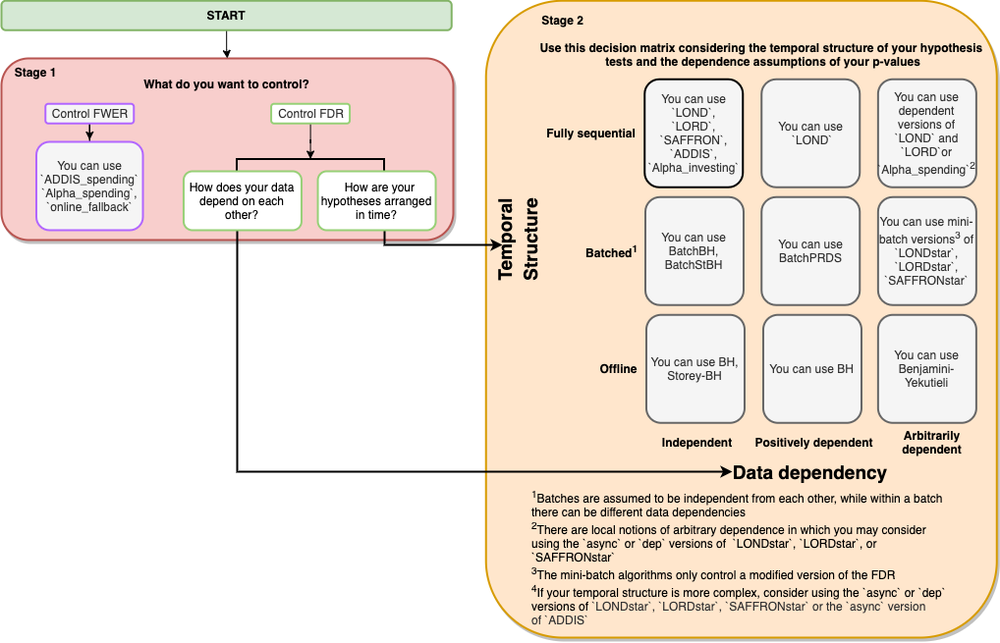
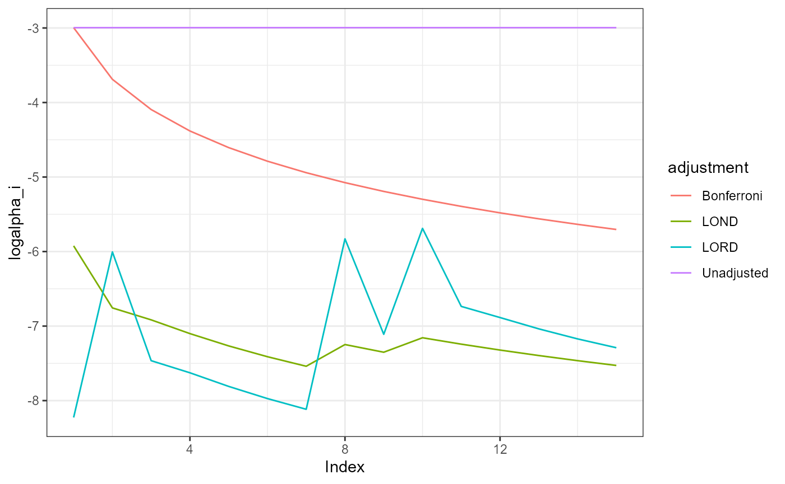

Managing online multiple hypothesis testing using the onlineFDR package
David S. Robertson, Lathan Liou, Aaditya Ramdas and Natasha A. Karp
2022-08-24
onlineFDR.RmdWhat is onlineFDR?
Multiple hypothesis testing is a fundamental problem in statistical inference, and the failure to manage multiple testing problems has been highlighted as one of the elements contributing to the replicability crisis in science (Ioannidis 2015). Methodologies have been developed to manage the multiple testing situation by adjusting the significance levels for a family of hypotheses, in order to control error metrics such as the familywise error rate (FWER) or the false discovery rate (FDR).
Frequently, modern data analysis problems have a further complexity in that the hypotheses arrive in a stream.

This introduces the challenge that at each step, the investigator must decide whether to reject the current null hypothesis without having access to the future p-values or the total number of hypotheses to be tested, but with the knowledge of the historic decisions to date.
The onlineFDR package provides a family of algorithms
you can apply to a historic or growing dataset to control the FDR or
FWER in an online manner. At a high-level, these algorithms rely on a
concept called “alpha wealth” in which experiments cost some amount of
error from your “budget” but a discovery earns some of the budget
back.

This vignette explains the two main uses of the package and demonstrates their typical workflows.
Which algorithm do I use?
We strive to make our R package as easy to use as possible. Please see the flowchart below to decide which function is best to solve your problem. The interactive version (click-to-functions) is available here.

Frequently Asked Questions
We also have a provided a non-exhaustive list of answers to some questions you may have when navigating the flowchart.
- What is the difference between FDR and FWER?
The FDR is the expected proportion of false rejections out of all rejections. The FWER is the probability of making any false rejections at all. Controlling the FWER is more conservative than controlling the FDR. Note that in the case when all null hypotheses are true, the FDR and FWER are the same.
- What do the different temporal structures mean?
Offline refers to the case when all the hypotheses are tested simultaneously by an algorithm. Batch refers to the case when the hypotheses are tested as they arrive in batches. Fully sequential refers to the case when hypotheses are tested as they arrive one-by-one.
- What do the different data dependencies mean?
‘Independent’ means that a given null p-value does not depend on any other nonnull p-values. A simple way to think about p-values being ‘positively dependent’ is to consider correlated hypothesis tests. For instance, consider testing for pairwise differences in means between 4 groups. If group A has an especially low mean, then not only would A vs. B yield a small p-value, but also A vs. C and A vs. D. Finally, ‘arbitrary dependence’ includes the situation where some of your p-values happen to be correlated with p-values from a long time ago.
- What are the differences between some of the algorithms such
as
LOND,LORD,SAFFRON, andADDIS?
LOND is a fairly simple algorithm where the significance
levels are multiplied by the number of discoveries/rejections that have
been made thus far. It also provably controls the FDR when the p-values
are positively correlated. However, the drawback is that unless many
discoveries are continually being made right from the start of an online
experiment, the adjusted significance levels (and hence the power) will
very quickly go towards zero. In this way, LOND is
oblivious to the information it gained from the previous hypothesis
tests and does not take full advantage of its alpha-wealth.
LORD improves upon LOND by taking advantage
of “alpha investing” where it can regain some of its alpha-wealth when
it makes a discovery/rejection. The adjusted significance levels depend
not only on how many discoveries have been made, but also the timing of
these discoveries. However, one drawback is that LORD does not take
advantage of the strength of the signals present in the data (i.e. the
size of the p-values).
SAFFRON improves upon this by focusing on the stronger
signals in the experiment (i.e. the smaller p-values). By removing the
possibility of ever rejecting weaker signals (those which are a
priori more likely to be truly null hypotheses),
SAFFRON preserves alpha-wealth. When there is a substantial
fraction of non-nulls in the online experiment, SAFFRON
will often be more powerful than LORD.
ADDIS is a further improvement upon SAFFRON
because it invests alpha-wealth more effectively by explicitly
discarding the weakest signals (i.e. the largest p-values) in a
principled way. This can result in an even higher power.
Quick Start
General Info
This Quick Start guide is meant to provide a framework for you to use
any of the algorithms within the onlineFDR package. The
algorithms used in the examples below were selected arbitrarily for the
sake of example.
Input data
In general, your dataset should contain, at the minimum, a column of p-values (‘pval’)). You can also pass in an id column (‘id’) or a date column (‘date’), but that is optional; the p-values will be treated as being ordered in sequence. Alternatively, you can also use just the vector of p-values, in which case, the p-values will also be treated as being ordered in sequence.
If you are using the Batch algorithms, ensure that your dataset
contains a column (‘batch’) where batches are defined in sequence
starting from 1. For more complex data structures, you may want to
consider using the STAR algorithms (see LONDstar(),
LORDstar(), and SAFFRONstar()). If you are not
sure which algorithm to use, click here.
All p-values generated should be passed to the function (and not just the significant p-values). An exception to this would be if you have implemented an orthogonal filter to reduce the dataset size, such as discussed in (Burgon et al., 2010).
What happens to the input data
If you’re using LOND(), LORD(),
SAFFRON() or ADDIS(), it orders the p-values
by date. If there are multiple p-values with the same date (i.e. the
same batch), the order of the p-values within each batch is randomised
by default. Generally, users should randomise unless they have a
priori knowledge that hypotheses should be ordered in such way such
that the ones with smaller p-values are more likely to appear first. In
order for the randomisation of the p-values to be reproducible, it is
necessary to set a seed (via the set.seed function) before
calling the wrapper function.
Otherwise, the other algorithms will take in the p-values in the original order of the data.
Understanding the output
For each hypothesis test, the functions calculate the adjusted
significance thresholds (alphai) at which the corresponding
p-value would be declared statistically significant.
Also calculated is an indicator function of discoveries
(R), where R[i] = 1 corresponds to hypothesis
i being rejected, otherwise R[i] = 0.
A dataframe is returned with the original data and the newly
calculated alphai and R.
Using onlineFDR Exploratively
This package (and the corresponding Shiny
app) can be used in an exploratory way post-hoc. If you have a
dataset of p-values for a series of experiments that have completed, you
can use the algorithms provided in onlineFDR to explore how
you could control the FDR and how the different algorithms have
different levels of power.
First, we initialize a toy dataset with three columns: an identifier (‘id’), date (‘date’) and p-value (‘pval’). Note that the date should be in the format “YYYY-MM-DD”.
sample.df <- data.frame(
id = c('A15432', 'B90969', 'C18705', 'B49731', 'E99902',
'C38292', 'A30619', 'D46627', 'E29198', 'A41418',
'D51456', 'C88669', 'E03673', 'A63155', 'B66033'),
date = as.Date(c(rep("2014-12-01",3),
rep("2015-09-21",5),
rep("2016-05-19",2),
"2016-11-12",
rep("2017-03-27",4))),
pval = c(2.90e-14, 0.06743, 0.01514, 0.08174, 0.00171,
3.61e-05, 0.79149, 0.27201, 0.28295, 7.59e-08,
0.69274, 0.30443, 0.000487, 0.72342, 0.54757))Next, we call our algorithm of interest. Note that we also set a seed
using the set.seed function in order for the results to be
reproducible.
library(onlineFDR)
set.seed(1)
LOND_results <- LOND(sample.df)
LOND_results
#> pval alphai R
#> 1 2.9000e-14 0.0026758385 1
#> 2 6.7430e-02 0.0011638206 0
#> 3 1.5140e-02 0.0009912499 0
#> 4 8.1740e-02 0.0008243606 0
#> 5 1.7100e-03 0.0006988870 0
#> 6 2.7201e-01 0.0006045900 0
#> 7 3.6100e-05 0.0005319444 1
#> 8 7.9149e-01 0.0007117838 0
#> 9 7.5900e-08 0.0006421423 1
#> 10 2.8295e-01 0.0007796504 0
#> 11 6.9274e-01 0.0007155186 0
#> 12 7.2342e-01 0.0006610273 0
#> 13 3.0443e-01 0.0006141682 0
#> 14 5.4757e-01 0.0005734509 0
#> 15 4.8700e-04 0.0005377472 1To check how many hypotheses we’ve rejected, we can do:
sum(LOND_results$R)
#> [1] 4To compare the results of one algorithm to another, we can visualize the adjusted significance thresholds:
set.seed(1)
LORD_results <- LORD(sample.df)
x <- seq_len(nrow(LOND_results))
par(mar=c(5.1, 4.1, 4.1, 9.1))
plot(x, log(LOND_results$alphai), ylim = c(-8.5, -2.5), type = 'l', col = "green",
xlab = "Index", ylab = "log(alphai)", panel.first = grid()) # LOND
lines(x, log(LORD_results$alphai), col = "blue") # LORD
lines(x, log(0.05/x), col = "red") # Bonferroni
lines(x, rep(log(0.05),length(x)), col = "purple") # Unadjusted
legend("right", legend = c("Unadjusted", "Bonferroni", "LORD", "LOND"),
col = c("purple", "red", "blue", "green"), lty = rep(1,4),
inset = c(-0.35,0), xpd = TRUE)
Note that both LOND and LORD result in much lower significance thresholds (alpha_i) than the offline Bonferroni adjustment. When alphai jumps, that indicates that the algorithm is recovering some of its “alpha wealth” when it makes a discovery. You can see how if the algorithm does not discover anything over time, its alpha wealth decreases (the akphai will monotonically decrease), and it becomes harder to reject a null hypothesis since the significance threshold gets smaller and smaller. In this toy example, we also see that LORD is more powerful (bigger jumps or recoveries in “alpha wealth”) compared to LOND.
Using onlineFDR over time
This package can be used over time as your dataset grows. In order for the randomisation of the data within the previous batches to remain the same (and hence to allow for reproducibility of the results), the same seed should be used for all analyses. Ideally, you will have selected your algorithm a priori based on your needs (click here. You can pass your growing dataset to the same algorithm.
# Initial experimental data
sample.df <- data.frame(
id = c('A15432', 'B90969', 'C18705'),
date = as.Date(c(rep("2014-12-01",3))),
pval = c(2.90e-14, 0.06743, 0.01514))
set.seed(1)
LOND_results <- LOND(sample.df)
# After you've completed more experiments
sample.df <- data.frame(
id = c('A15432', 'B90969', 'C18705', 'B49731', 'E99902',
'C38292', 'A30619', 'D46627', 'E29198', 'A41418',
'D51456', 'C88669', 'E03673', 'A63155', 'B66033'),
date = as.Date(c(rep("2014-12-01",3),
rep("2015-09-21",5),
rep("2016-05-19",2),
"2016-11-12",
rep("2017-03-27",4))),
pval = c(2.90e-14, 0.06743, 0.01514, 0.08174, 0.00171,
3.61e-05, 0.79149, 0.27201, 0.28295, 7.59e-08,
0.69274, 0.30443, 0.000487, 0.72342, 0.54757))
set.seed(1)
LOND_results <- LOND(sample.df)More Advanced Use Cases
This section covers some more use cases for more “advanced”
onlineFDR users.
Batch Setting
If your p-values came from hypothesis tests that were performed in
batches, you might consider using the batch algorithms:
BatchPRDS(), BatchBH(), and
BatchStBH().
sample.df <- data.frame(
id = c('A15432', 'B90969', 'C18705', 'B49731', 'E99902',
'C38292', 'A30619', 'D46627', 'E29198', 'A41418',
'D51456', 'C88669', 'E03673', 'A63155', 'B66033'),
pval = c(2.90e-08, 0.06743, 0.01514, 0.08174, 0.00171,
3.60e-05, 0.79149, 0.27201, 0.28295, 7.59e-08,
0.69274, 0.30443, 0.00136, 0.72342, 0.54757),
batch = c(rep(1,5), rep(2,6), rep(3,4)))
batchprds_results <- BatchPRDS(sample.df)Setting a Bound
In the cases where you a priori expect a certain
number of hypothesis tests, you can set a bound. Note that the bounds
for LOND and LORDdep depend on alpha, so ensure that the alpha value
used for the bound is the same alpha value used for the algorithm.
Supply your bound to either the betai or
gammai argument in your chosen algorithm.
sample.df <- data.frame(
id = c('A15432', 'B90969', 'C18705', 'B49731', 'E99902',
'C38292', 'A30619', 'D46627', 'E29198', 'A41418',
'D51456', 'C88669', 'E03673', 'A63155', 'B66033'),
date = as.Date(c(rep("2014-12-01",3),
rep("2015-09-21",5),
rep("2016-05-19",2),
"2016-11-12",
rep("2017-03-27",4))),
pval = c(2.90e-14, 0.06743, 0.01514, 0.08174, 0.00171,
3.61e-05, 0.79149, 0.27201, 0.28295, 7.59e-08,
0.69274, 0.30443, 0.000487, 0.72342, 0.54757))
# Assuming a bound of 20 hypotheses
bound <- setBound("LOND", alpha = 0.04, 20)
set.seed(1)
LOND_results <- LOND(sample.df, alpha = 0.04, betai = bound)API
Online FDR Control
LOND()implements the LOND procedure for online FDR control, where LOND stands for (significance) Levels based On Number of Discoveries, as presented by Javanmard and Montanari (2015). The procedure controls the FDR for independent or positively dependent (PRDS) p-values, with an option(dep = TRUE)which guarantees control for arbitrarily dependent p-values.LORD()implements the LORD procedure for online FDR control, where LORD stands for (significance) Levels based On Recent Discovery, as presented by Javanmard and Montanari (2018), Ramdas et al. (2017) and Tian & Ramdas (2019). The function provides different versions of the procedure valid for independent p-values, seevignette("theory"). There is also a version (‘dep’) that guarantees control for dependent p-values.SAFFRON()implements the SAFFRON procedure for online FDR control, where SAFFRON stands for Serial estimate of the Alpha Fraction that is Futilely Rationed On true Null hypotheses, as presented by Ramdas et al. (2018). The procedure provides an adaptive method of online FDR control.Alpha_investing()Implements a variant of the Alpha-investing algorithm of Foster and Stine (2008) that guarantees FDR control, as proposed by Ramdas et al. (2018). This procedure uses a variant of SAFFRON’s update rule. This procedure controls the FDR for independent p-values.ADDIS()implements the ADDIS algorithm for online FDR control, where ADDIS stands for an ADaptive algorithm that DIScards conservative nulls, as presented by Tian & Ramdas (2019). The algorithm compensates for the power loss of SAFFRON with conservative nulls, by including both adaptivity in the fraction of null hypotheses (like SAFFRON) and the conservativeness of nulls (unlike SAFFRON). This procedure controls the FDR for independent p-values.
Batch FDR Control
BatchPRDS()implements the BatchPRDS algorithm for online FDR control, where PRDS stands for positive regression dependency on a subset, as presented by Zrnic et al. (2020). The BatchPRDS algorithm controls the FDR when the p-values in one batch are positively dependent, and independent across batches, by running the Benjamini-Hochberg procedure on each batch.BatchBH()implements the BatchBH algorithm for online FDR control, as presented by Zrnic et al. (2020). The BatchBH algorithm controls the FDR when the p-values in a batch are independent, and independent across batches, by running the Benjamini-Hochberg procedure on each batch.BatchStBH()implements the BatchSt-BH algorithm for online FDR control, as presented by Zrnic et al. (2020). This algorithm makes one modification to the original Storey-BH algorithm (Storey 2002), by adding 1 to the numerator of the null proportion estimate for more stable results. The BatchSt-BH algorithm controls the FDR when the p-values in a batch are independent, and independent across batches, by running the Storey Benjamini-Hochberg procedure on each batch.
Asynchronous FDR Control
LONDstar()implements the LOND algorithm for asynchronous online testing, as presented by Zrnic et al. (2021). This controls the mFDR.LORDstar()implements LORD algorithms for asynchronous online testing, as presented by Zrnic et al. (2021). This controls the mFDR.SAFFRONstar()implements the SAFFRON algorithm for asynchronous online testing, as presented by Zrnic et al. (2021). This controls the mFDR.
FWER Control
Alpha_spending()implements online FWER control using a Bonferroni-like test. Alpha-spending provides strong FWER control for arbitrarily dependent p-values.online_fallback()implements the online fallback algorithm for FWER control, as proposed by Tian & Ramdas (2021). Online fallback is a uniformly more powerful method than Alpha-spending, as it saves the significance level of a previous rejection. Online fallback strongly controls the FWER for arbitrarily dependent p-values.ADDIS_spending()implements the ADDIS-spending algorithm for online FWER control, as proposed by Tian & Ramdas (2021). The algorithm compensates for the power loss of Alpha-spending, by including both adaptivity in the fraction of null hypotheses and the conservativeness of nulls. ADDIS-spending provides strong FWER control for independent p-values. Tian & Ramdas (2021) also presented a version for handling local dependence.
How to get help for onlineFDR
All questions regarding onlineFDR should be posted to the Bioconductor support site, which serves as a searchable knowledge base of questions and answers:
https://support.bioconductor.org
Posting a question and tagging with “onlineFDR” will automatically send an alert to the package authors to respond on the support site.
Acknowledgements
We would like to thank the IMPC team (via Jeremy Mason and Hamed Haseli Mashhadi) for useful discussions during the development of the package.
References
Aharoni, E. and Rosset, S. (2014). Generalized \(\alpha\)-investing: definitions, optimality results and applications to public databases. Journal of the Royal Statistical Society (Series B), 76(4):771–794.
Benjamini, Y., and Yekutieli, D. (2001). The control of the false discovery rate in multiple testing under dependency. The Annals of Statistics, 29(4):1165-1188.
Bourgon, R., Gentleman, R., and Huber, W. (2010). Independent filtering increases detection power for high-throughput experiments. Proceedings of the National Academy of Sciences, 107(21), 9546-9551.
Foster, D. and Stine R. (2008). \(\alpha\)-investing: a procedure for sequential control of expected false discoveries. Journal of the Royal Statistical Society (Series B), 29(4):429-444.
Ioannidis, J.P.A. (2005). Why most published research findings are false. PLoS Medicine, 2.8:e124.
Javanmard, A., and Montanari, A. (2015). On Online Control of False Discovery Rate. arXiv preprint, https://arxiv.org/abs/1502.06197.
Javanmard, A., and Montanari, A. (2018). Online Rules for Control of False Discovery Rate and False Discovery Exceedance. Annals of Statistics, 46(2):526-554.
Koscielny, G., et al. (2013). The International Mouse Phenotyping Consortium Web Portal, a unified point of access for knockout mice and related phenotyping data. Nucleic Acids Research, 42.D1:D802-D809.
Li, A., and Barber, F.G. (2017). Accumulation Tests for FDR Control in Ordered Hypothesis Testing. Journal of the American Statistical Association, 112(518):837-849.
Ramdas, A., Yang, F., Wainwright M.J. and Jordan, M.I. (2017). Online control of the false discovery rate with decaying memory. Advances in Neural Information Processing Systems 30, 5650-5659.
Ramdas, A., Zrnic, T., Wainwright M.J. and Jordan, M.I. (2018). SAFFRON: an adaptive algorithm for online control of the false discovery rate. Proceedings of the 35th International Conference in Machine Learning, 80:4286-4294.
Robertson, D.S. and Wason, J.M.S. (2018). Online control of the false discovery rate in biomedical research. arXiv preprint, https://arxiv.org/abs/1809.07292.
Robertson, D.S., Wason, J.M.S. and Ramdas, A. (2022). Online multiple hypothesis testing for reproducible research. arXiv preprint, https://arxiv.org/abs/.
Robertson, D.S., Wildenhain, J., Javanmard, A. and Karp, N.A. (2019). Online control of the false discovery rate in biomedical research. Bioinformatics, 35:4196-4199, https://doi.org/10.1093/bioinformatics/btz191.
Storey, J. D. (2002). A direct approach to false discovery rates. JRSS B, 64(3):479–498.
Tian, J. and Ramdas, A. (2019). ADDIS: an adaptive discarding algorithm for online FDR control with conservative nulls. Advances in Neural Information Processing Systems, 32.
Tian, J. and Ramdas, A. (2021). Online control of the familywise error rate. Statistical Methods in Medical Research, 30(4):976–993.
Zrnic, T., Jiang, D., Ramdas, A. and Jordan, M. (2020). The power of batching in multiple hypothesis testing. International Conference on Artificial Intelligence and Statistics (AISTATS) 2020, PMLR, 108:3806-3815.
Zrnic, T., Ramdas, A. and Jordan, M.I. (2021). Asynchronous Online Testing of Multiple Hypotheses. JMLR, 22:1-33.